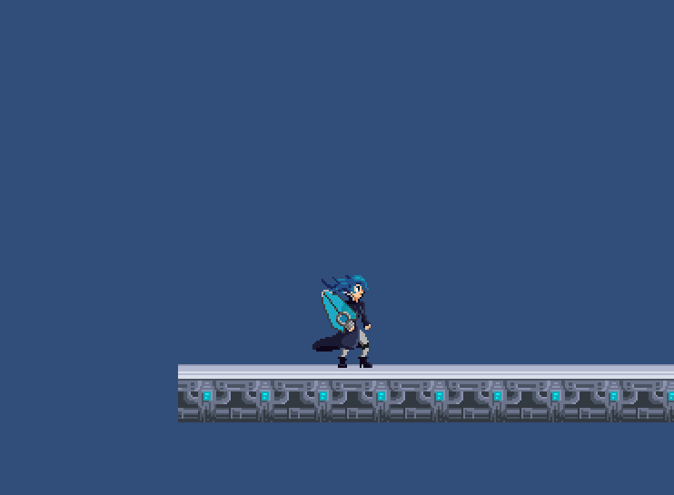
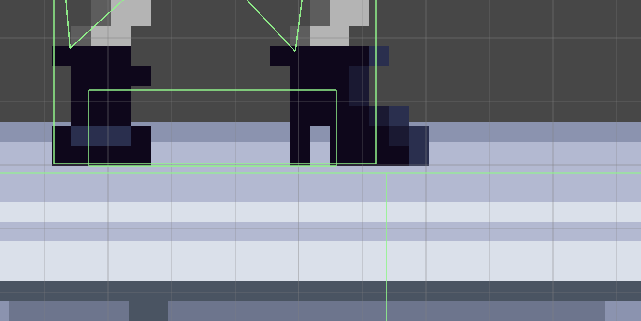
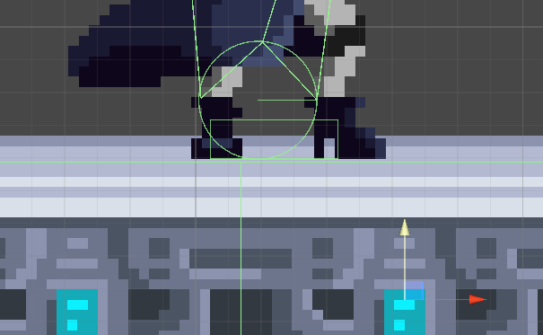
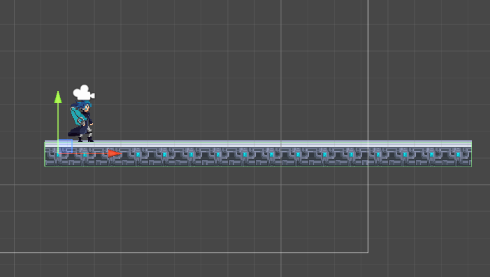

Tile unifier
As soon as I wrote the first version of my player controller, I stumbled on a weird bug. Alice would sometimes
get stuck between tiles, even though I had attached a material with 0 friction to her colliders and to the colliders
of the tiles.
This would be so easy, if only we used a single, continuous collider! The great thing is that it is possible to unify the single tiles' colliders.
Firstly, every tile checks if it has other tiles around it, so that it can understand whether it's part of a wall, of the ground or of the ceiling and if it is the first tile of the series. In that case, it throws longer and longer raycasts until it hasn't reached the end of the tile series. Every time a tile is hit, its collider is disabled and the first one's is extended.
Here's the final result:
25/05/2019

She would just get stuck between the two box colliders

Creating my levels in Aseprite (the pixel art editor I use) and then adding colliders via Unity would have been just
a temporary solution, and only for the levels made by me: the procedurally generated parts are necessarily made of
single tiles, so, eventually, I would have got the same problem.
Changing collider
I partially solved the problem by changing the collider used by Alice to trigger contact with the ground, which, at the beginning, was a box collider. A circle collider (or a capsule collider, the concept is the same) helped a lot: since they have no edges, they can't get stuck between tiles.

But, exactly when I thought the problem was definitely solved, I discovered a new bug: sometimes, the run animation is interrupted
and then immediately resumed. This means Alice still gets stuck between tiles, but probably the force applied to the sprite is enough
to unstuck her. This would be so easy, if only we used a single, continuous collider! The great thing is that it is possible to unify the single tiles' colliders.
Tile unifier!
Each tile prefab comes with a TileUnifier, which is a script that automatically creates a single collider starting from multiple PolygonCollider2Ds. The idea is pretty naive, but it unexpectedly works! I basically divide a level between rows and columns: the first tile extends its collider so that it incorporates the other ones.Firstly, every tile checks if it has other tiles around it, so that it can understand whether it's part of a wall, of the ground or of the ceiling and if it is the first tile of the series. In that case, it throws longer and longer raycasts until it hasn't reached the end of the tile series. Every time a tile is hit, its collider is disabled and the first one's is extended.
Here's the final result:

This was a pretty short log, but I think this is a pretty useful tricks if you have to deal with multple colliders in tile-based
levels. I hope you learnt something new, have a nice day and see you in the next log!
As you can see, the collider now includes the other tiles
25/05/2019